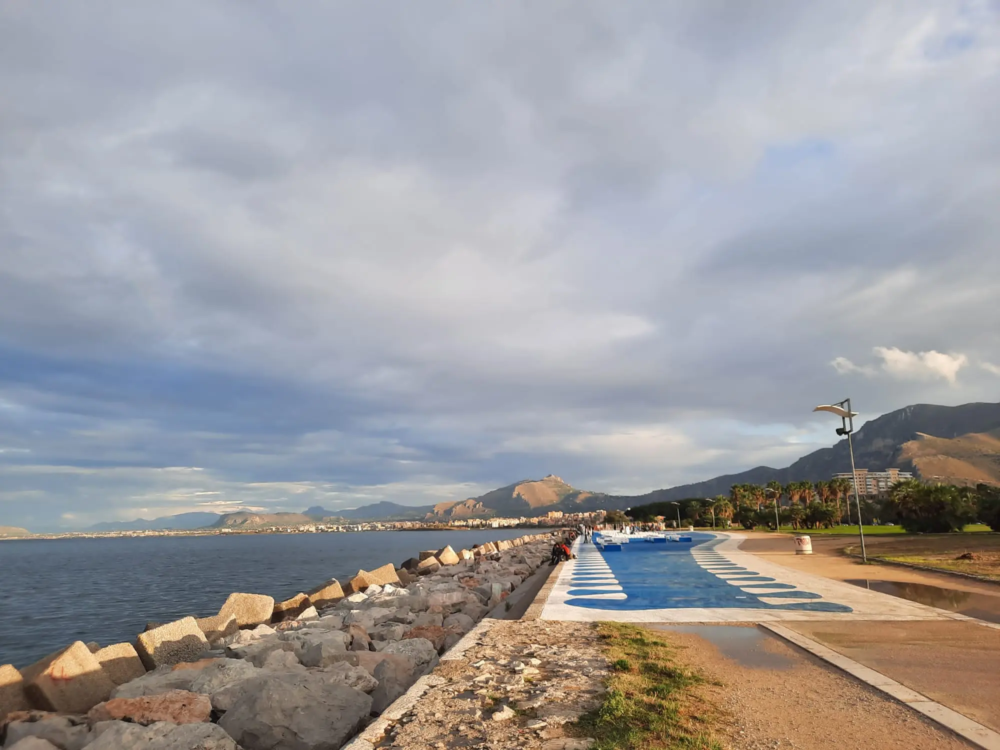
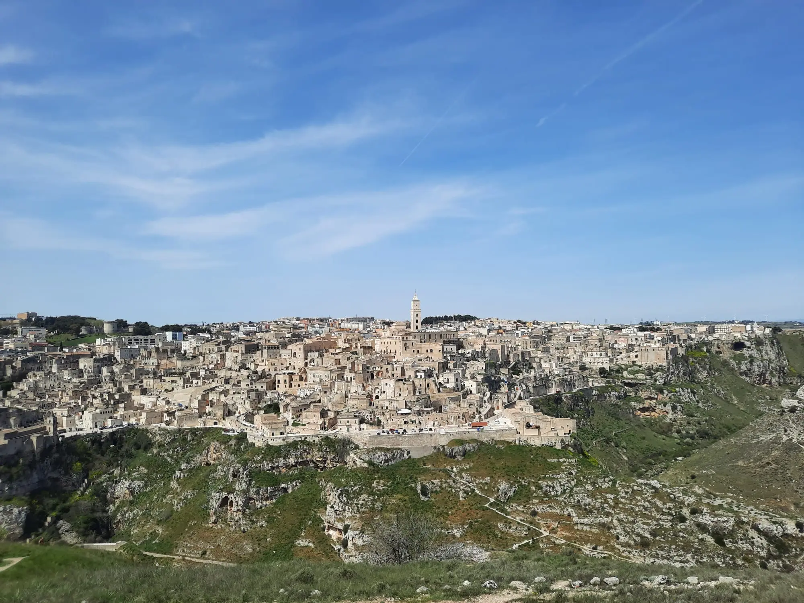
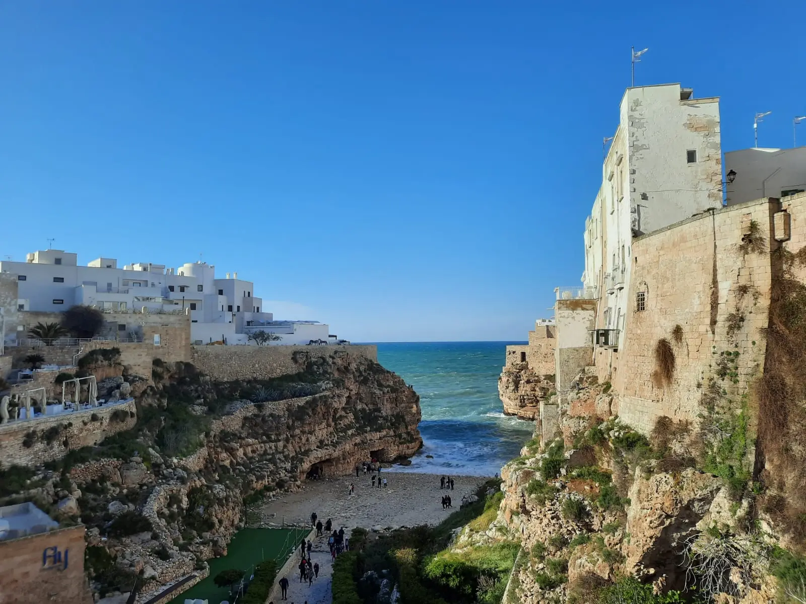

Weekend in Palermo & Mondello
A perfect weekend exploring Palermo and the beautiful Mondello beach. Discover food, culture, and iconic spots.
A collection of travel experiences, city guides and visual stories across Italy. From hidden streets to iconic landmarks, each article is designed to inspire your next journey and bring you closer to authentic places, culture and food.

A perfect weekend exploring Palermo and the beautiful Mondello beach. Discover food, culture, and iconic spots.

Exploring the Sassi of Matera, ancient cave dwellings, panoramic viewpoints and unforgettable local food experiences.

Exploring Bari, Polignano a Mare, Alberobello, Monopoli and Trani along the Adriatic Coast.